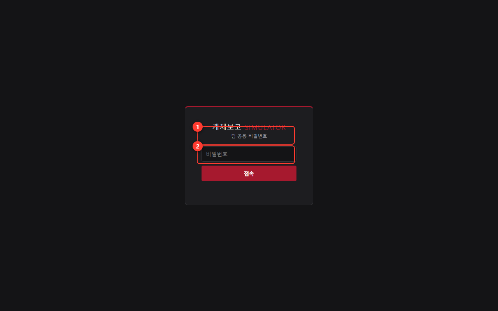
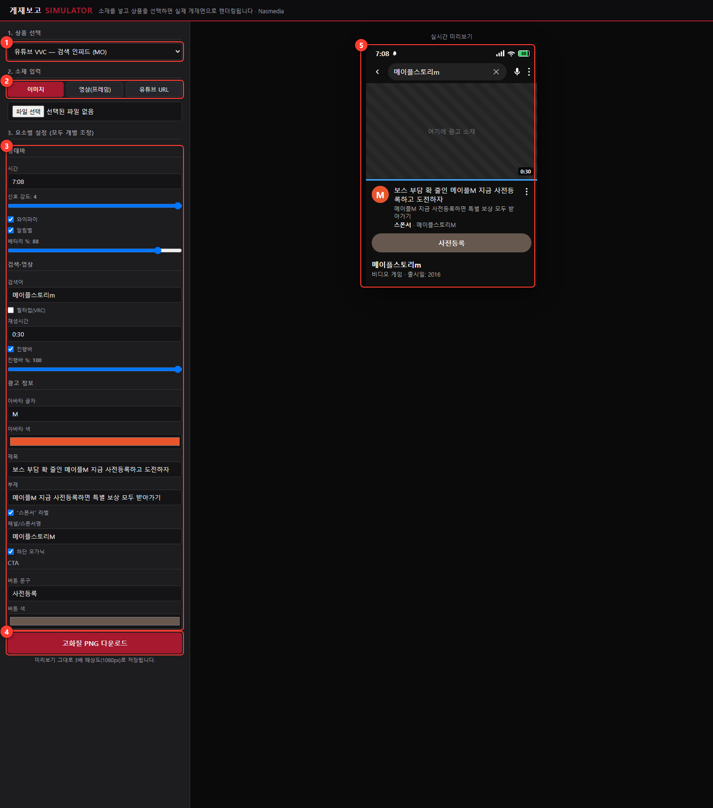
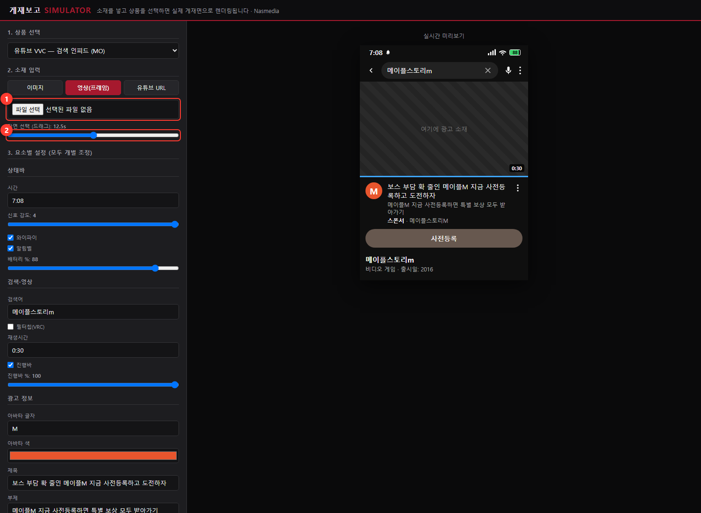
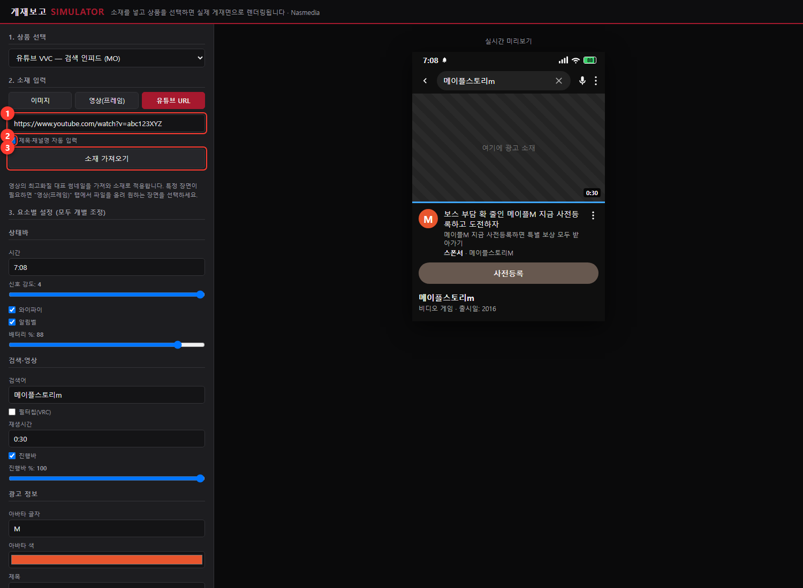
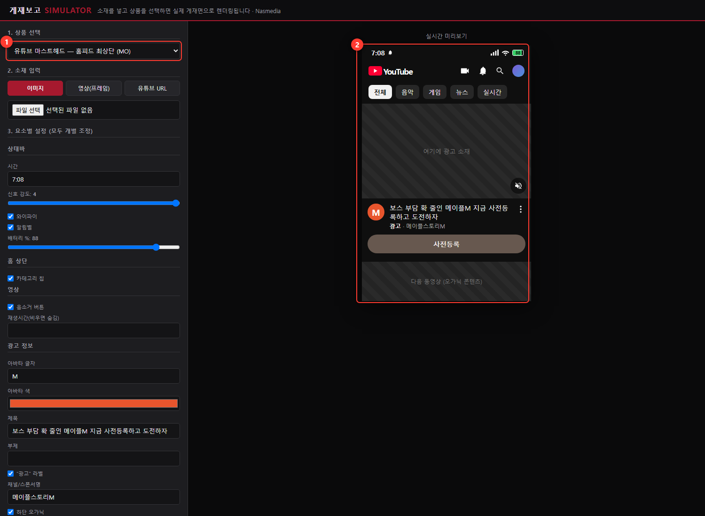

게재보고를 만들 때 실제 화면을 캡처할 수 없는 지면(라이브가 끝난 캠페인, 타기팅 때문에 내 계정에서 안 보이는 지면 등)을 채우기 위한 도구입니다. 광고 소재를 넣고 상품을 고르면 실제 유튜브 게재면과 동일한 레이아웃으로 합성한 고화질(1080px) 이미지를 만들어 줍니다.

화면은 왼쪽 = 조작, 오른쪽 = 실시간 미리보기로 나뉩니다. 왼쪽에서 무엇이든 바꾸면 오른쪽에 즉시 반영됩니다.

| 번호 | 영역 | 하는 일 |
|---|---|---|
| 1 | 1. 상품 선택 | 드롭다운에서 게재 지면을 고릅니다. 모바일(MO) 4종 + 데스크톱(PC) 3종. 상품을 바꾸면 미리보기와 아래 설정 항목이 그 지면에 맞게 통째로 바뀝니다. |
| 2 | 2. 소재 입력 | 탭 3개(이미지 / 영상(프레임) / 유튜브 URL) 중 하나로 광고 소재를 넣습니다. → 4장에서 자세히. |
| 3 | 3. 요소별 설정 | 시간·배터리·검색어·제목·CTA 색까지 화면의 모든 요소를 개별 조정합니다. → 6장에서 자세히. |
| 4 | 고화질 PNG 다운로드 | 완성되면 클릭. 미리보기 그대로 3배 해상도(가로 1080px)로 저장됩니다. |
| 5 | 실시간 미리보기 | 지금 저장하면 나올 결과물 그대로입니다. 빗금 영역("여기에 광고 소재")에 소재가 합성됩니다. |
"이미지" 탭에서 파일 선택을 누르고 소재 이미지(JPG/PNG)를 고르면 즉시 미리보기에 합성됩니다. 소재 시안이나 스틸컷이 있을 때 사용하세요.


youtube.com/watch?v=…, youtu.be/…, /shorts/… 모두 인식합니다.이번 업데이트로 유튜브 마스트헤드 템플릿이 추가되어, 모바일 지면은 총 4종이 되었습니다. 마스트헤드는 유튜브 앱 홈 화면 최상단에 노출되는 대형 영상 지면으로, 라이브 당일 하루만 게재되는 경우가 많아 사후 캡처가 특히 어려운 상품입니다.

마스트헤드 전용 설정 항목:
| 그룹 | 항목 | 설명 |
|---|---|---|
| 홈 상단 | 카테고리 칩 | "전체 · 음악 · 게임…" 칩 줄 표시/숨김 |
| 영상 | 음소거 버튼 | 실제 마스트헤드처럼 우하단 음소거 아이콘 표시/숨김 |
| 영상 | 재생시간 | 입력하면 우하단에 시간 배지 표시, 비우면 숨김(기본) |
| 광고 정보 | "광고" 라벨 | 채널명 앞의 광고 표기 켜기/끄기 |
| 광고 정보 | 하단 오가닉 | 마스트헤드 아래로 살짝 보이는 다음 동영상 영역 표시/숨김 |
"3. 요소별 설정"에는 선택한 상품의 화면 요소가 그룹별로 나열됩니다. 입력하는 즉시 미리보기에 반영됩니다.
| 그룹 | 대표 항목 | 이렇게 쓰세요 |
|---|---|---|
| 상태바 (MO) | 시간, 신호 강도, 와이파이, 배터리 % | 캡처처럼 자연스럽게 — 보고서의 다른 실캡처와 시간대를 맞추면 좋습니다. |
| 검색·영상 | 검색어, 필터칩(VRC), 재생시간, 진행바 | 검색어는 실제 캠페인 키워드로. VRC 상품은 필터칩이 자동으로 켜집니다. |
| 광고 정보 | 아바타 글자·색, 제목, 부제, 스폰서명, "스폰서/광고" 라벨 | 광고주 브랜드명과 실제 집행 문구를 입력하세요. 유튜브 URL로 소재를 가져왔다면 자동으로 채워져 있습니다. |
| CTA | 버튼 문구, 버튼 색 | 버튼 색은 색상 선택기를 눌러 소재 톤에 맞춥니다. |
| Shorts 전용 | 좋아요/댓글 수, 광고 배지, 하단 내비게이션 | 숫자는 자연스러운 값으로 자유 입력. |
게재면_상품명.png 파일이 다운로드됩니다. 미리보기의 3배 해상도(가로 1080px)라 보고서 삽입 시에도 선명합니다.비공개/삭제된 영상이거나 썸네일이 없는 영상입니다. 소재 파일(이미지·영상)을 직접 업로드하는 방법을 사용하세요.
유튜브 URL 방식은 세로 썸네일을 우선 탐색하지만 영상에 따라 없을 수 있습니다. 이 경우 "영상(프레임)" 탭에서 세로 원본(1080×1920)을 올려 장면을 선택하는 것이 가장 확실합니다.
템플릿은 계속 확장 예정입니다. 필요한 지면과 실제 캡처 샘플을 관리 담당자에게 전달해 주세요.
브라우저 캐시 때문일 수 있습니다. Ctrl+F5(강력 새로고침)를 눌러 주세요.